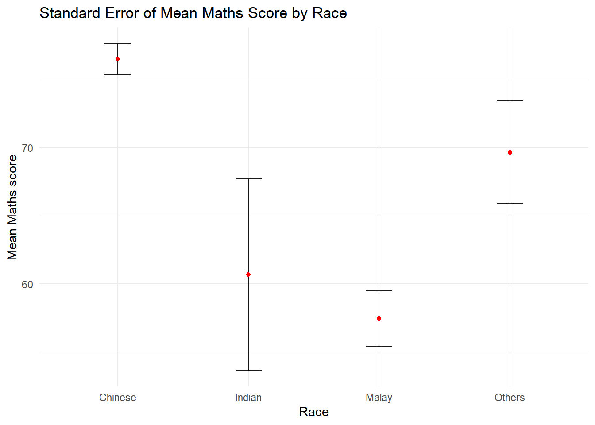
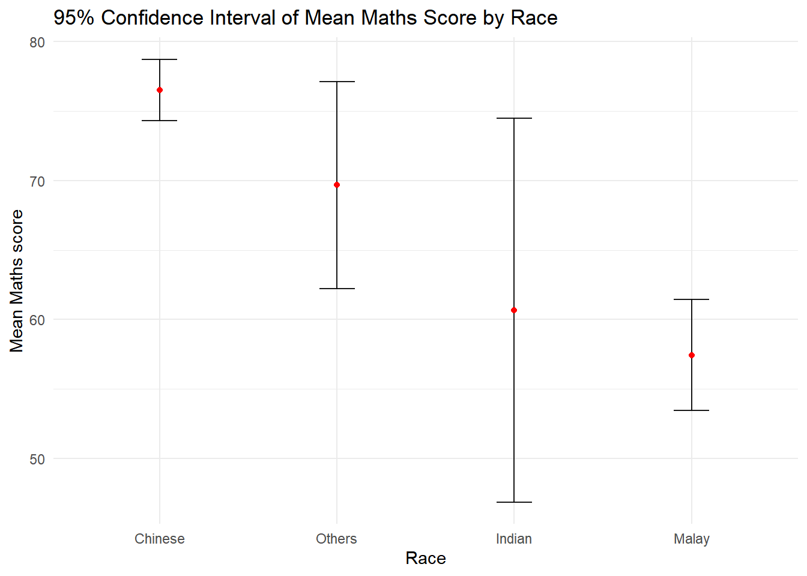
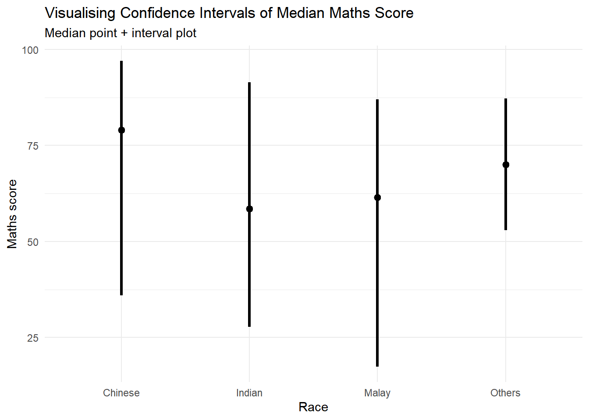
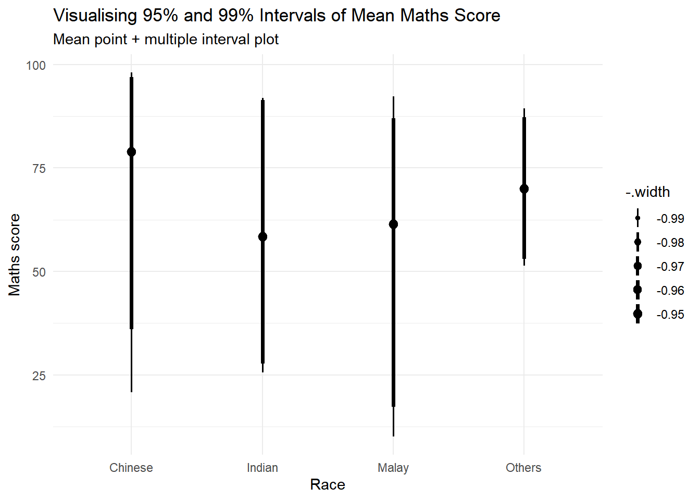
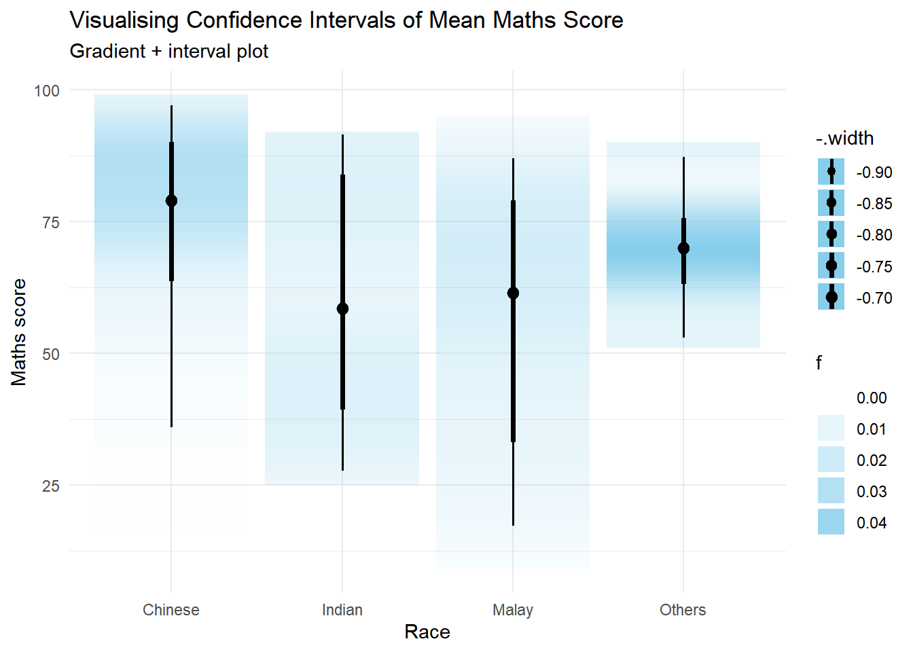

Code
if (!require(pacman)) install.packages("pacman")
pacman::p_load(
plotly,
crosstalk,
DT,
ggdist,
ggridges,
colorspace,
gganimate,
tidyverse,
knitr
)
exam <- read_csv("Exam_data.csv")Visualising Uncertainty
Jedidiah Asaf T
This hands-on exercise focuses on visualising uncertainty using error bars, confidence intervals, interactive charts, and uncertainty visualisation methods.
Rows: 322
Columns: 7
$ ID <chr> "Student321", "Student305", "Student289", "Student227", "Stude…
$ CLASS <chr> "3I", "3I", "3H", "3F", "3I", "3I", "3I", "3I", "3I", "3H", "3…
$ GENDER <chr> "Male", "Female", "Male", "Male", "Male", "Female", "Male", "M…
$ RACE <chr> "Malay", "Malay", "Chinese", "Chinese", "Malay", "Malay", "Chi…
$ ENGLISH <dbl> 21, 24, 26, 27, 27, 31, 31, 31, 33, 34, 34, 36, 36, 36, 37, 38…
$ MATHS <dbl> 9, 22, 16, 77, 11, 16, 21, 18, 19, 49, 39, 35, 23, 36, 49, 30,…
$ SCIENCE <dbl> 15, 16, 16, 31, 25, 16, 25, 27, 15, 37, 42, 22, 32, 36, 35, 45…| RACE | n | mean | sd | se |
|---|---|---|---|---|
| Chinese | 193 | 76.51 | 15.69 | 1.13 |
| Indian | 12 | 60.67 | 23.35 | 7.04 |
| Malay | 108 | 57.44 | 21.13 | 2.04 |
| Others | 9 | 69.67 | 10.72 | 3.79 |
ggplot(my_sum) +
geom_errorbar(
aes(
x = RACE,
ymin = mean - se,
ymax = mean + se
),
width = 0.2,
colour = "black",
alpha = 0.9,
linewidth = 0.5
) +
geom_point(
aes(
x = RACE,
y = mean
),
stat = "identity",
color = "red",
size = 1.5,
alpha = 1
) +
labs(
title = "Standard Error of Mean Maths Score by Race",
x = "Race",
y = "Mean Maths score"
) +
theme_minimal()
ggplot(my_sum) +
geom_errorbar(
aes(
x = reorder(RACE, -mean),
ymin = mean - 1.96 * se,
ymax = mean + 1.96 * se
),
width = 0.2,
colour = "black",
alpha = 0.9,
linewidth = 0.5
) +
geom_point(
aes(
x = reorder(RACE, -mean),
y = mean
),
stat = "identity",
color = "red",
size = 1.5,
alpha = 1
) +
labs(
title = "95% Confidence Interval of Mean Maths Score by Race",
x = "Race",
y = "Mean Maths score"
) +
theme_minimal()
shared_df <- SharedData$new(my_sum)
p <- ggplot(shared_df) +
geom_errorbar(
aes(
x = reorder(RACE, -mean),
ymin = mean - 2.58 * se,
ymax = mean + 2.58 * se
),
width = 0.2,
colour = "black",
alpha = 0.9,
linewidth = 0.5
) +
geom_point(
aes(
x = RACE,
y = mean,
text = paste(
"Race:", RACE,
"<br>N:", n,
"<br>Average score:", round(mean, 2),
"<br>99% CI: [",
round(mean - 2.58 * se, 2),
",",
round(mean + 2.58 * se, 2),
"]"
)
),
stat = "identity",
color = "red",
size = 1.5,
alpha = 1
) +
xlab("Race") +
ylab("Average Maths Score") +
ggtitle("99% Confidence Interval of Average Maths Scores by Race") +
theme_minimal() +
theme(
axis.text.x = element_text(
angle = 45,
vjust = 0.5,
hjust = 1
)
)Warning in geom_point(aes(x = RACE, y = mean, text = paste("Race:", RACE, :
Ignoring unknown aesthetics: textWarning in layer_slabinterval(data = data, mapping = mapping, stat =
StatPointinterval, : Ignoring unknown parameters: `.point` and `.interval`

Warning in draw_slabs(self, ...): `fill_type = "gradient"` is not supported by the current graphics device.
ℹ Falling back to `fill_type = "segments"`.
→ If you believe your current graphics device does support `fill_type =
"gradient"` but auto-detection failed, try setting `fill_type = "gradient"`
explicitly. If this causes the gradient to display correctly, then this
warning is likely a false positive caused by the graphics device failing to
properly report its support for the `"LinearGradient"` pattern via
`grDevices::dev.capabilities()`. Consider reporting a bug to the author of
the graphics device.
ℹ For more information, see the documentation for `fill_type` in
`ggdist::geom_slabinterval()` or the documentation for
`ggplot2::check_device()`.
Caused by warning in `draw_slabs()`:
! Unable to check the capabilities of the png device.
This section is optional because the ungeviz package may need to be installed from GitHub. To avoid rendering errors, the code is shown but not executed.
# install.packages("devtools")
# devtools::install_github("wilkelab/ungeviz")
library(ungeviz)
ggplot(
data = exam,
aes(
x = factor(RACE),
y = MATHS
)
) +
geom_point(
position = position_jitter(
height = 0.3,
width = 0.05
),
size = 0.4,
color = "#0072B2",
alpha = 1 / 2
) +
geom_hpline(
data = sampler(25, group = RACE),
height = 0.6,
color = "#D55E00"
) +
theme_bw() +
transition_states(.draw, 1, 3)In this exercise, I learned that uncertainty should not be hidden in visual analytics. Error bars, confidence intervals, and interval plots help communicate how reliable or uncertain a point estimate is. Interactive visualisation also helps users inspect the uncertainty values more clearly.